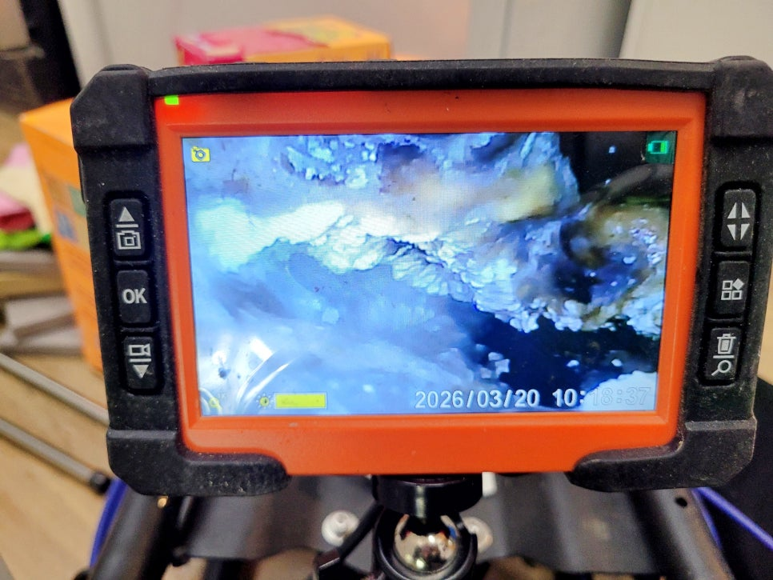
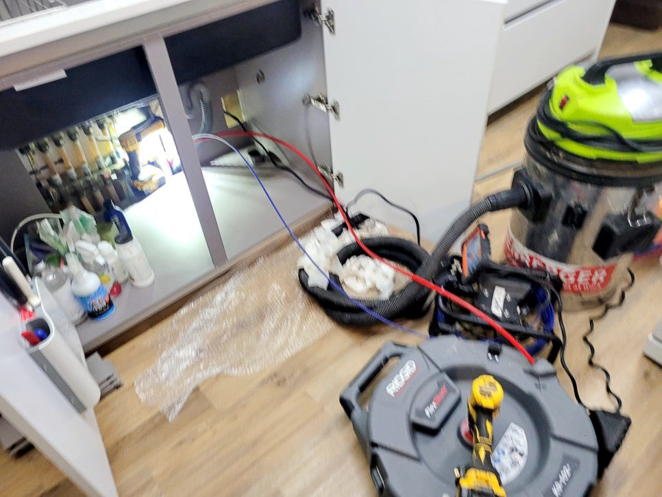
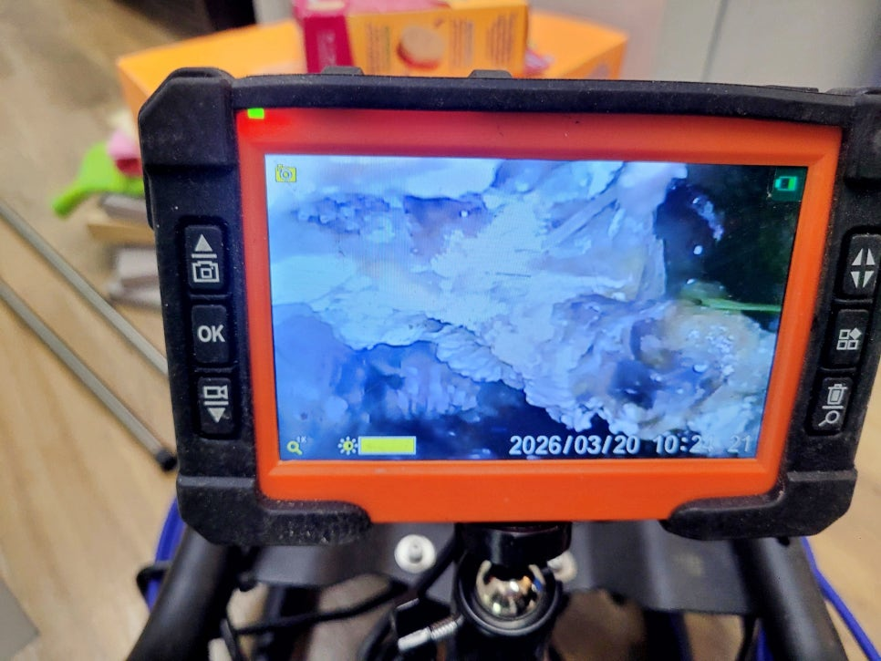
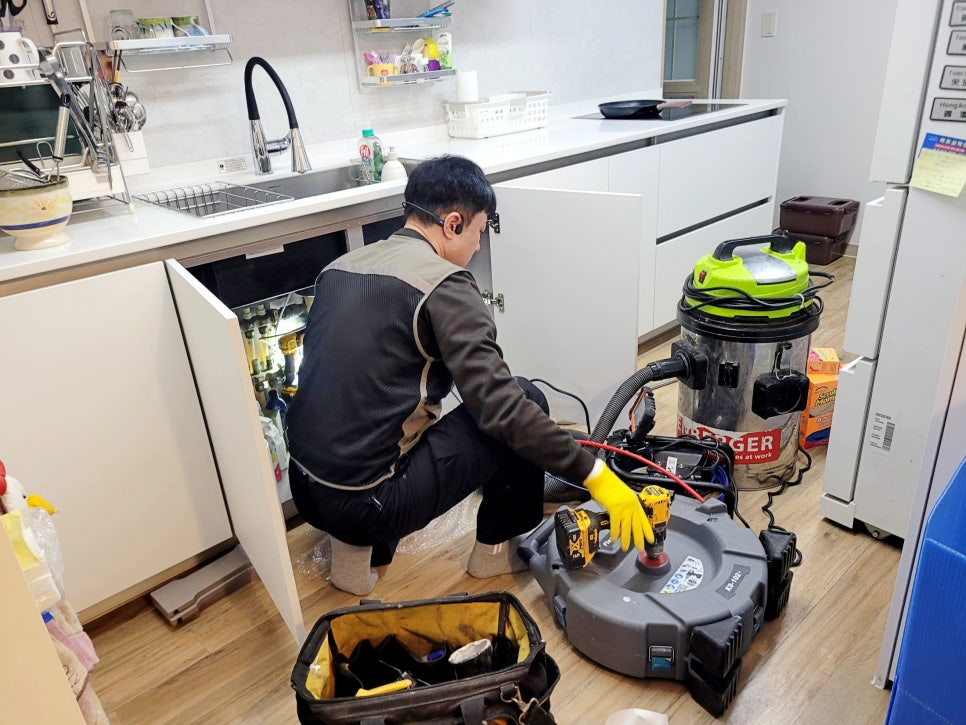
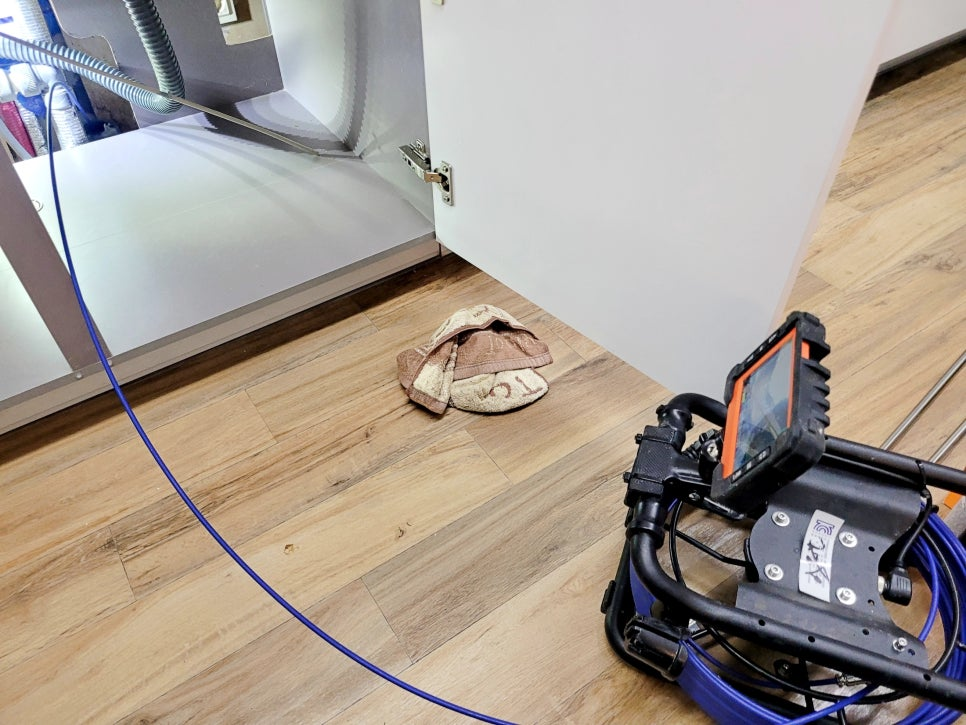
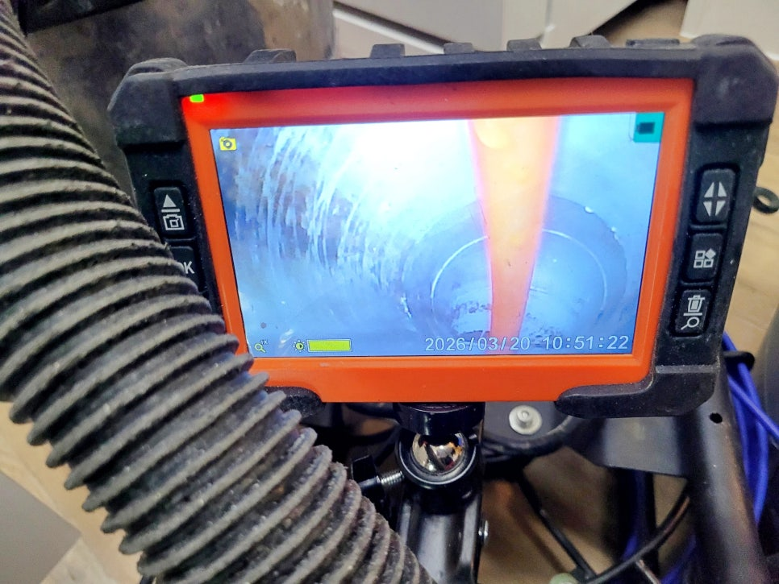

🏠 화성시 향남 싱크대 배수 느려지는 원인, 배관 속 기름 청소작업
화성 향남 싱크대막힘 전문 시공 후기

📋 작업 개요
- 위치: 화성 향남, 향남, 화성
- 서비스 유형: 싱크대막힘, 하수구막힘, 배관막힘, 역류해결, 뚫는업체, 배관청소
- 작업 일시: 2026. 4. 17. 18:44
- 업체명: 하수구수사대 (010-5615-2118)
🔍 문제 상황
화성시 향남 싱크대 배수구막힘 원인,
배관청소로 기름 제거했어요.
반갑습니다.
화성시 향남 싱크대막힘 배관청소
전문업체 하수구수사대입니다.
오늘 소개할 현장은 화성시 향남
아파트 주방 싱크대에서 물을 써도
배수가 시원하게 빠지지 않고
지속적으로 역류하는 증상으로 연락을
주신 사례였는데요.
화성시 향남 싱크대 배수구 속 기름층 모습
처음에는 단순한 배수 지연처럼
보일 수 있지만, 이런 증상이
계속 이어질 때는 배관 안쪽에
오염이 두껍게 쌓였을 가능성을
먼저 의심해봐야 합니다.
그럼 지금부터
화성시 향남 싱크대 배수구막힘
원인과 어떤 방법으로
해결해드렸는지 살펴보겠습니다.
향남 아파트 싱크대 배수 느려진 원인은?
그래서 저희는 싱크대 하부장을
🔎 원인 분석
💡 전문가 진단: 화성시 향남 싱크대 배수구막힘 원인,배관청소로 기름 제거했어요.
열고 작업 공간을 확보한 뒤
내시경 카메라 장비를 투입해
배관 내부 상태부터
세밀하게 살펴봤는데요.
내시경 화면으로 살펴보니
배관 내부 벽면 곳곳에 기름 찌꺼기가
두껍게 달라붙어 있었는데요.
통수 구간이 좁아지면서 물이 천천히
빠지는 이유가 분명하게 드러났습니다.
향남 아파트 싱크대 배관청소 장면
특히 굴곡이 있는 구간은 기름 축적이
더 심했고, 한 번 막히기 시작한 뒤
생활 오염이 계속 붙으면서 배수 흐름을
더 답답하게 만드는 상태였습니다.
그럼 여기서 싱크대막힘을 예방하기
위한 요령을 잠시 알려드리겠는데요.
배관 관리 요령은
1. 기름 바로 버리지 않기
2. 찌꺼기 거름망 사용
3. 배수 느릴 때 초기에 점검
이 세 가지를 기억해두면
싱크대막힘 예방에 도움이 됩니다.
내시경 점검과 샤프트 작업

🔧 작업 과정
굴곡진 부위 샤프트 청소 장면
원인을 정확히 찾은 뒤에는
샤프트 장비를 이용해
막힌 구간을 직접 공략하며
배관 청소를 진행했습니다.
막힌 부분만 살짝 뚫고 끝내는
방식이 아니라 내부에 붙은
기름층을 계속 벗겨내는
방향으로 작업을 이어갔는데요.
중간마다 다시 내시경 카메라를
넣어 잔여 오염이 남은 곳을
살펴봤고, 미흡한 부분은
그 자리에서 다시 샤프트로
공략해 배관 안쪽 흐름을
조금씩 넓혀갔습니다.
배관 청소로 깨끗해진 싱크대 배수구 내부
향남읍 아파트 싱크대막힘 배관청소
과정에서 굴곡진 부위까지 따라가며
상태를 봐야 재막힘 가능성을
줄일 수 있어 단순 1회 작업으로
마치지 않고 반복 점검을 함께
진행했습니다.
싱크대막힘 청소 작업 마무리
싱크대 배관청소 마지막 점검에서는
답답하게 막혀 있던 구간이
정리되면서 배수 흐름이
한결 부드럽게 살아났는데요.
배관 속 기름 축적은
겉으로 잘 보이지 않아도
싱크대 물 안 내려감의 원인으로
자주 이어지는 부분입니다.
이번 화성시 향남 싱크대 배수구막힘
현장은 내시경으로 원인을 정확히 짚고
샤프트 작업을 반복해 굴곡 구간까지
꼼꼼하게 정리한 점이 핵심이었는데요.
하수구수사대는 배관 내부 상태를


✅ 작업 완료
세밀하게 살피며 현장에 맞는
방식으로 불편 원인을
해결해드리고 있으니 언제든지
연락 주시기 바라며
이상으로
"화성시 향남 싱크대 배수 느려지는 원인"
배관 청소작업 후기를 마치겠습니다.
긴 글 읽어주셔서 감사합니다.
#화성시향남하수구업체 #화성시향남배관청소업체 #화성향남싱크대막힘전문 #화성시향남싱크대막힘청소 #화성싱크대배수구막힘 #향남싱크대배수구청소전문 #향남하수구업체




⚠️ 주방 싱크대 배관 막힘 예방 수칙
- ✅ 기름기가 묻은 식기나 프라이팬은 설거지 전 키친타올로 반드시 기름때를 닦아내세요.
- ✅ 주기적으로 싱크대 개수대에 뜨거운 물을 가득 받아 한 번에 내려 배관 내부 기름을 씻어내세요.
- ✅ 배수구 거름망을 미세한 필터로 사용하시고 음식물 찌꺼기가 틈으로 새어 들지 않게 관리하세요.
- ✅ 베이킹소다와 식초를 뜨거운 물과 함께 일주일에 한 번씩 부어주면 배관 살균과 막힘 예방에 좋습니다.
💡 핵심 정리
- 확실한 장비 작업(내시경 점검 및 샤프트 스케일링)으로 원인을 뿌리 뽑습니다.
- 작업 후 1년 이내에 동일한 부위 재발 시 100% 무상 A/S 서비스를 보장합니다.
- 서울 · 경기 · 인천 전 지역에 24시간 언제든 긴급 출동할 수 있도록 항시 대기 중입니다.
❓ 자주 묻는 질문 (FAQ)
🚨 화성 향남 싱크대막힘 문제로 고민이신가요?
정확한 원인 진단과 확실한 시공으로 재발 없는 해결을 약속드립니다.
24시간 긴급 출동 | 서울 · 경기 · 인천 전지역 | 1년 내 재발 시 무상 A/S